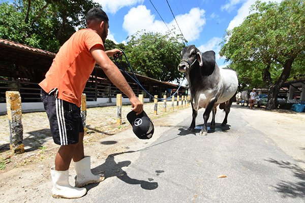
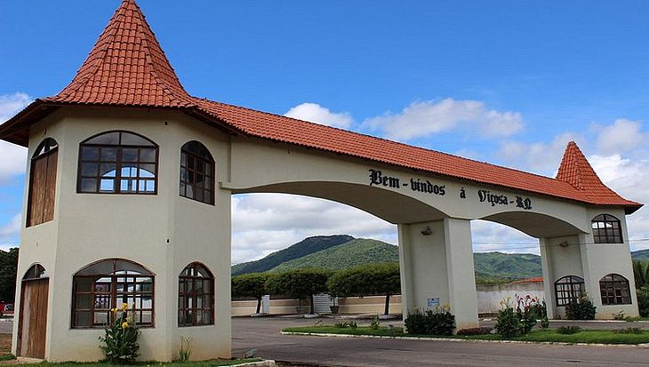

Bem-vindo ao portal de notícias sobre lazer e eventos
Principais notícias
Festa do Boi será aberta hoje e deve atrair 330 mil pessoas

00:00:00 - 13/11/2021 — Foto: Adriano Abreu
A Festa do Boi, principal evento do setor agrícola do Rio Grande do Norte, começa neste sábado (13) com a
estimativa de movimentar R$ 50 milhões, dos quais, R$ 2 milhões somente em leilões. Esta, que é a 59ª
edição, marca o retorno presencial da programação, depois de um 2020 marcado apenas por atividades
virtuais, por causa da pandemia de covid-19. A festa, que se encerra no próximo dia 20, deverá receber
um público de 330 mil pessoas.
Segundo o presidente da Associação Norte Riograndense de Criadores (Anorc), Marcelo Passos, que organiza
o evento, o retorno acontece em um momento delicado para o setor agrícola do Estado. Por isso, de acordo
com ele, essa retomada é tão importante. “Estamos diante de uma seca que assola o Estado, além de uma
política equivocada do milho e de uma sociedade que precisa entender que nós precisamos enfrentar o
final dessa pandemia.
Precisamos pegar essas dificuldades e transformar em oportunidades negócios. E é isso que nós estamos
fazendo”, afirma.
Nessa sexta-feira (12), a TRIBUNA DO NORTE foi ao Parque Aristófanes Fernandes, em Parnamirim, onde
acontece a festa, para acompanhar a preparação do evento, que traz exposições de máquinas e equipamentos
agrícolas, animais, produtos alimentícios e demais itens ligados ao campo.
Os trabalhos eram intensos na manhã de sexta. Em meio a um ritmo frenético para deixar tudo no lugar
antes da abertura da festa, o gerente da Massas Real Sabor, Humberto Dantas, contou que a expectativa
para o evento era boa. “É nosso primeiro ano de participação aqui. Estamos terminando de organizar o
estande e preparando a parte de layout para que, neste sábado esteja tudo pronto” relatou o empresário.
Maria das Dores Xavier e Juliana Azevedo também trabalhavam duro para deixar tudo pronto até a abertura
da Festa do Boi. As duas são da Casa do Fazendeiro, empresa que vende itens para para casa de campo e
animais. “Nossa expectativa é muito boa. O público está com saudade de vir aqui, porque as pessoas têm
esse contato com as raízes rurais.”, pontua Maria das Dores.
“E os criadores estavam sentindo falta de expor seus animais. Aqui tem sempre uma boa negociação, onde
os expositores fazem novos contatos. A festa é importante demais. Todos nós sentimos muito porque não
estivemos aqui no ano passado”, completa Juliana.
Por Felipe Salustino
Repórter
00:00:00 - 13/11/2021
Cidades de PE, MA e RN terão R$ 3 mi do governo para revitalizar espaços para cultura

Prefeitura Municipal de Viçosa-RN. — Foto: Redes sociais
Cidades de três estados da região Nordeste do país terão à disposição R$ 3 milhões do Ministério do
Turismo para construir ou revitalizar praças públicas. No município de Miranda do Norte, no Maranhão,
por exemplo, cenário de realizações como festejos de Bumba Meu Boi e de Tambor de Crioula, R$ 1,2 milhão
do órgão do governo federal será investido na reforma e na implantação de infraestrutura na Praça Zilda
Sampaio.
O espaço ganhará calçamento, paisagismo, acessibilidade, banheiros, iluminação e ciclovia, favorecendo a
atração de visitantes interessados em conhecer a produção de mel, comidas típicas e o artesanato local.
Luis Domingues, situada no litoral norte do Maranhão e palco de atrativos como o Círio de Nazaré,
contará com outros R$ 384,2 mil do MTur, reservados à restauração da sua Praça de Eventos. O projeto
envolve a realização de obras de acessibilidade, readequação de piso, iluminação e reforma do palco e de
camarins, com o objetivo de potencializar a movimentação de turistas durante eventos culturais típicos,
que incluem, ainda, o aniversário do município.
O ministro do Turismo, Gilson Machado Neto, defende esforços pela adequada preparação dos destinos
nacionais para receber visitantes no período pós-pandemia. “Tradicionalmente, as praças no Nordeste
abrigam vários eventos e atividades culturais, que refletem a identidade do brasileiro e atraem
visitantes de cidades próximas e de outros estados. Esse movimento gera um grande impacto econômico nos
municípios, e estamos empenhados em garantir que essas cidades possam retomar seus eventos, contribuindo
para a geração de empregos e desenvolvimento por meio do turismo”, sustenta o ministro.
Já Iati, em Pernambuco, com pontos turísticos que incluem o Sítio Arqueológico da Pedra Pintada, terá à
disposição R$ 960 mil do MTur para reformar e implantar infraestrutura na Praça Odete Tenório. Com a
revitalização, que engloba melhorias no piso, iluminação, paisagismo e acessibilidade, o espaço
reforçará a capacidade do município de receber visitantes durante eventos do calendário regional, a
exemplo da Festa de São Paulo Apóstolo e do São João.
A cidade de Betânia, no mesmo estado, por sua vez, contará com R$ 238,9 mil para restaurar e dotar de
paisagismo a Praça da Bandeira. O município do sertão pernambucano é cenário de atrativos como trilhas
ecológicas nas serras do Catolé e do Serrotinho, a Fazenda Brejinho - frequentada no passado por Luiz
Gonzaga - e eventos a exemplo das festas de Santo Antônio, do Sagrado Coração de Jesus e de emancipação
política, celebrada em 19 de março.
Já o município de Viçosa, no Rio Grande do Norte, situado próximo à região serrana de Portalegre,
distante 373 quilômetros da capital do estado, Natal, vai receber R$ 313,3 mil para construir e reformar
praças públicas. Os recursos vão proporcionar a revitalização de passeios, urbanização e iluminação,
entre outras intervenções, de modo a oferecer uma melhor estrutura tanto para moradores do município
quanto aos turistas que visitam a cidade.